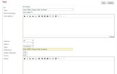
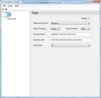
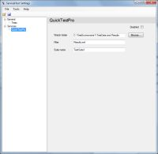

Description
The VersionOne Quick Test Professional Integration (V1QuickTestPro) imports the results of tests defined HP's Quick Test Professional (QTP) into VersionOne. The results of an individual QTP test can be linked to a Test Artifact in VersionOne, so that development, and you organization, will receive quick feedback on which tests are passing and failing.
Once this integration is installed, VersionOne users update the Reference field on a VersionOne Test with the test names defined in QTP. The Test Run Trend report shows the aggregated test results for the test suite which was assigned to the project at the time of the test run. For individual tests, each test in VersionOne should have its own test defined in QTP. If a test fails on a story or defect that is already closed, V1QuickTestPro can be configured to create a defect in the current iteration, so the team is notified of the failing test.
The following sequence diagram illustrates how V1QuickTestPro interacts with QTP and VersionOne.
{kind=link}
System Requirements
- VersionOne: 7.1 or above, including Team Edition
- Integration Server:
- Operating System — Windows 2003, 2008
- Framework—Microsoft .Net 2.0 SP1
- HP Quick Test Pro—Release 9.2 — 10.0
Download
The latest version of V1QuickTestPro is available from the VersionOne Community site
Installation
These installation instructions assume that QTP is already installed, configured, and working properly.
- Determine Install Location
V1QuickTestPro can be installed on any server with network access to both VersionOne and your QTP Test results. Exact placement should be determined by your internal software management requirements. The integration server must meet the System Requirements stated above.
- Extract Files
Download V1QuickTestPro using the link above and extract it into a folder of your choice.
- Configure
- Start integration
Open up the command prompt, navigate to your installation folder, and run the following command:VersionOne.ServiceExecutor.exe
If you have configured your system properly, you should see the following output when there are no results to publish into VersionOne
C:\V1MercuryQTP>VersionOne.ServiceExecutor.exe Loaded VersionOne.ServiceHost.Logging.ConsoleLogService, VersionOne.ServiceHost.Core. Loaded VersionOne.ServiceHost.Logging.FileLogService, VersionOne.ServiceHost.Core. Loaded VersionOne.ServiceHost.TestServices.Mercury.QTPReaderService, VersionOne.ServiceHost.TestServices. Loaded VersionOne.ServiceHost.TestServices.TestWriterService, VersionOne.ServiceHost.TestServices. [Info] Initialized ConsoleLogService [Info] Initializing FileLogService [Info] Initialized FileLogService [Info] Initializing QTPReaderService1 [Info] Initialized QTPReaderService1 [Info] Initializing TestWriterService [Info] Initialized TestWriterService [Startup] [Shutdown] C:\V1MercuryQTP>
- Test the integration
Before testing you must execute at least one test. Once this is complete, open up the command prompt, navigate to your installation folder, and run the following command:VersionOne.ServiceExecutor.exe
When V1QuickTestPro and VersionOne are configured correctly you should see data being published into VersionOne.
C:\V1MercuryQTP>VersionOne.ServiceExecutor.exe Loaded VersionOne.ServiceHost.Logging.ConsoleLogService, VersionOne.ServiceHost.Core. Loaded VersionOne.ServiceHost.Logging.FileLogService, VersionOne.ServiceHost.Core. Loaded VersionOne.ServiceHost.TestServices.Mercury.QTPReaderService, VersionOne.ServiceHost.TestServices. Loaded VersionOne.ServiceHost.TestServices.TestWriterService, VersionOne.ServiceHost.TestServices. [Info] Initialized ConsoleLogService [Info] Initializing FileLogService [Info] Initialized FileLogService [Info] Initializing QTPReaderService1 [Info] Initialized QTPReaderService1 [Info] Initializing TestWriterService [Info] Initialized TestWriterService [Startup] [Info] Updating status of Acceptance Test "Test:1366:1598". [Info] Suite: TestRun.Date = 11/20/2007 9:17:20 AM TestRun.Failed = 1 TestRun.Elapsed = 0 TestRun.Description = Release10TestSuite on 11/20/2007 9:17:20 AM TestRun.Passed = 2 TestRun.NotRun = 0 TestRun.Name = Release10TestSuite TestRun.TestSuite = TestSuite:1771 [Shutdown] C:\V1MercuryQTP> - Automate the process
To automate the publishing of results after each test run is accomplished
{kind=link}
{kind=link}
Configuration
Configure VersionOne
| If you are using Team Edition, you need to manually create the Test Suite. Instructions for doing this are available on the VersionOne Community Site. |
- Add a TestSuite in VersionOne
- Assign the VersionOne TestSute to a Project
Once the TestSuite is created, it must be assigned to a Project. To accomplish this, edit the VersionOne Project details.
- Set the Reference Field on Test that are automated using QTP
Before V1QuickTestPro can update a VersionOne Test you must associate the VersionOne Test with a QTP test. To configure this association, you need to edit a VersionOne Test and enter the QTP Test Name in the VersonOne Reference field.

{kind=link}
{kind=link}
{kind=link}
{kind=link}
Configure the Integration
To configure V1QuickTestPro you need to run the ServiceHost configuration tool
ServiceHostConfigTool.exe
The following section describes how to configure your QTP integration using the use the configuration tool
- Specify your VersionOne connection details on the General
The following table describes the fields on this tabField Description Server URL This is the URL to your VersionOne server Username VersionOne user that will create defects Password Password for the specified user Use Windows Integrated Authentication Check this box if you VersionOne server is configured to use Windows Integrated Authentication 
When using the integrated authentication, V1QuickTestPro will authenticate to VersionOne using the Windows domain user under which the executable is running if both the username and password parameters are blank. If the username and password is entered, you must specify the windows domain account in the form "User@FullyQualifiedDomainName". If you are unsure what the fully qualified domain name is, see the Domain name shown on the 'Computer Name' tab in the My Computer...Properties dialog. If there's a proxy between this machine and the VersionOne instance, you'll also need to configure the following settings:
Field Description Use Proxy For Connection Determines if the integration tries to connect through a Proxy Proxy URL This is the URL to your Proxy Server Proxy Username The username that will get you past this proxy Proxy Password The password for the Proxy Username Proxy Domain Name of Proxy Domain - Once the VersionOne parameters are entered, press Verify button to continue.
- Specify how to update Test in VersionOne on the Tests tab.

The following table describes the fields on this tabField Description Disabled Check this box to disable ChangeSet creation in VersionOne. Reference Field Name VersionOne Field name to search for QTP test identifier. It's recommended that you use the Reference field; however if you are already using this field for another purpose, you may choose another text field, including custom fields. Test Passed Status Value to set when a QTP test passes Test Failed Status Value to set when a QTP test fails Change Comment Comment to use when setting values on VersionOne tests Description Suffix If you are creating Defects, this text will appear in the description field Create Defect Indicates whether V1QuickTestPro should create VersionOne Defects when a QTP test fails for closed tests in VersionOne. Valid values are:
* All: The integration will create a VersionOne Defect for any closed test in the project when the QTP test fails
* Current Iteration: The integration will only create VersionOne Defects for closed tests within the current iteration when the QTP test fails
* None: The integration never create VersionOne Defects - Specify your QTP details on the Quick Test Pro tab.

The following table describes the fields on this tabField Description Disabled Check this box if you want to disable polling QTP for Test Results. Watch The directory to poll for QTP test results files. Filter The file filter to use when polling for QTP test results files; it may contain any valid search pattern (i.e. *.xml) Suite Name The VersionOne Test Suite Name - Save your changes and exit the program
{kind=link}
{kind=link}
{kind=link}
Technical Details
VersionOne.ServiceHost.exe.config
VersionOne.ServiceHost.exe.config is the file that controls the behavior of VersionOne.ServiceHost.exe. Values in this file are set by the configuration tool (ServiceHostConfigTool.exe). This section is provided for informational use only. Users are discouraged from editing this file directly.
The QTPReaderService watches for new result files, interprets QTP test results, and publishes the results to the TestWriterService. The following table describes the elements nested under TestWriterService.
| Element Name | Description |
|---|---|
| Watch | QTP test results output folder. Paths are relative to the V1QuickTestPro installation folder. |
| Filter | Specify the file you want to watch. Wildcards are accepted. By default the pattern is Results.xml. |
| SuiteName | VersionOne Test Suite. |
The TestWriterService element controls how Tests are updated in VersionOne. The following table describes the elements nested under TestWriterService.
| Element Name | Description |
|---|---|
| ApplicationUrl | The URL for your VersionOne application |
| Username | The VersionOne account username, if using native VersionOne security. If using Windows Integrated Security, leave empty. |
| Password | The VersionOne account password, if using native VersionOne security. If using Windows Integrated Security, leave empty. |
| APIVersion | The minimum application version required for this hosted service. |
| IntegratedAuth | False if using VersionOne native security, True if using Windows Integrated Security. If VersionOne is configured to use Windows Integrated Security, the account the service is running as must be a configured VersionOne user with a project role of Team Member or higher. Also, Username and Password should be empty if IntegratedAuth is true. |
| PassedOid | The TestStatus asset Oid in VersionOne that indicates test a test succeeded |
| FailedOid | The TestStatus asset Oid in VersionOne that indicates that a test failed |
| TestReferenceAttribute | The cross-reference used to associate tests in VersionOne to test in the external test system ('Number' is the default, 'Reference' another option) |
| ChangeComment | The change comment put into history for any modifications the service makes in VersionOne |
| DescriptionSuffix | A suffix for the description of any defects that the service creates; Embedded Rich Text (HTML) is valid in this suffix |
| CreateDefect | Indicates whether the TestWriterService should create VersionOne Defects when a QTP test fails for closed tests in VersionOne. Valid values are:
|